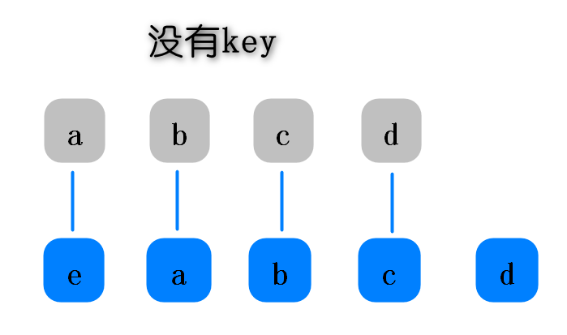
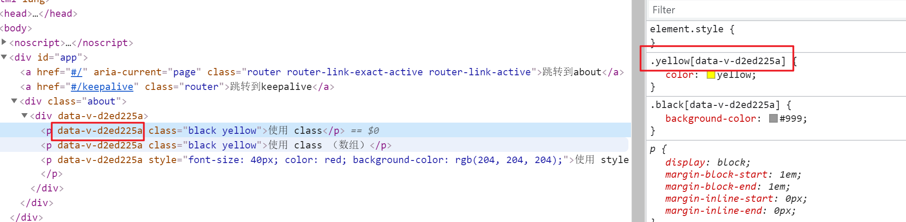

1. 路由
1.1 router的使用方式
在router/index.js的文件中引入vue-router,Vue.use(VueRouter)
new VueRouter 导出
创建vue实例的地方，引入router
在具体的页面中使用router-link标签 :to属性配置path或者name query或者 params
使用router-view标签展示link的链接的组件
1.2 router跳转+传参
1.2.1 路由跳转的四种方式
1 | <router-link to="/home"> </router-link> |
1 | this.$router.push('/home') |
1.2.2 路由传参的三种方式
路径带？key=value
1
<router-link to="/about?id=1">About</router-link>
query 相当于get
1
<router-link :to="{path:'/query',query:{id:12}}">带参数query</router-link>
params 相当于post
1
<router-link :to="{name:'Params',params:{id:11}}">带参数params</router-link>
1.2.3 获取路由参数的方法
1 | // 路径传参和query属性传参，都用该方式获取参数 |
1.3 动态路由
作用：多个路由对应同一个组件，根据路由配置id不同，获取不同参数，进行相应处理
1.4 路由嵌套
作用：一个页面某个位置根据链接不同，展示不同的组件，例如项目中的店家
展示默认子路由方法：在嵌套路由父路由中添加redirect属性，值为子路由的值
1 | redirect: '/childrouter', |
1.5 路由懒加载/ 按需加载
作用：性能优化：不用到该路由，不加载该组件
ES6的impot方式:
1 | component: () => import(/* webpackChunkName: "about" */ '../views/About.vue'), |
VUE中的异步组件进行懒加载方式:
1 | component: resolve=>(require(['../views/About'],resolve)) |
2. v-show和v-if
- 作用: 都是控制元素隐藏和显示的
- 区别：
- v-show: 控制的元素无论是true还是false，都被渲染出来了，通过display：none控制元素隐藏
- v-if: 控制的元素是true，进行渲染，如果是false不渲染，根本在dom树结构中不显示
- 应用：
- v-show: 适合使用在切换频繁显示/隐藏的元素上
- v-if: 适合使用在切换不频繁，且元素内容很多，渲染一次性能消耗很大的元素上
3. v-for 为什么要加key
v-for 为什么一定要加key，且key要不同
加key是为了给元素添加唯一标识，因为vue是虚拟dom，用diff算法对节点进行一一比对，要修改哪个元素，这个元素一定要有一个唯一标识，为了性能优化,比如修改了原数组，没有给li上加key，那么在进行运算的时候，就重新将整体渲染一遍，但是如果有key，那么它就会按照key找到修改内容的那个li元素，改掉它自己，不需要对其他元素进行修改


- key为什么不能是index，因为假设我们给数组前插入一个新元素，它的下标是0，那么和原来的第一个元素重复了，整个数组的key都发生了改变，这样就跟没有key的情况一样了
4. keepalive
默认情况下加在keepalive标签中的组件都会进行缓存
为了区别缓存哪些组件的方法
给keepalive 添加属性，组件名称指的是具体组件添加的name，不是路由里面的name
include 包含的组件(可以为字符串，数组，以及正则表达式,只有匹配的组件会被缓存)
exclude 排除的组件(以为字符串，数组，以及正则表达式,任何匹配的组件都不会被缓存)
最常用的方式：和路由配合使用：在路由中添加meta属性，美团项目App.vue
keepalive作用：提升性能，避免重复加载一些不需要经常变动且内容较多的组件
使用keepalive导致组件不重新加载，也就不会重新执行生命周期的函数，如果要解决这个问题，就需要两个属性进入时触发：activated 退出时触发：deactivated
5. data 为什么是函数
vue组件中data值不能为对象，因为对象是引用类型，组件可能会被多个实例同时引用。如果data值为对象，将导致多个实例共享一个对象，其中一个组件改变data属性值，其它实例也会受到影响
data是一个函数的话，这样每复用一次组件，就会返回一份新的data，类似于给每个组件实例创建一个私有的数据空间，让各个组件实例维护各自的数据。而单纯的写成对象形式，就使得所有组件实例共用了一份data，就会造成一个变了全都会变的结果。
所以说vue组件的data必须是函数。这都是因为js的特性带来的，跟vue本身设计无关。
6. 为什么style中加scoped
区分样式的作用域，原理是加上scoped就会给当前组件添加上自定义属性，同时选择器上会添加自定义属性进行样式设置

7. computed /watch的区别
7.1 computed
- 初始化显示或者相关的 data、props 等属性数据发生变化的时候调用；
- 将复杂的计算逻辑从模板中抽离出来，使模板变得更加简洁
- 计算属性不在 data 中，它是基于data 或 props 中的数据通过计算得到的一个新值，这个新值根据已知值的变化而变化；
- 在 computed 属性对象中定义计算属性的方法，和取data对象里的数据属性一样，以属性访问的形式调用；
- computed中的方法只有依赖的数据发生改变的时候才会执行,且计算的结果会缓存起来，更像是input的keyup事件，获取到value值进行比对之后再触发
- 在computed中的，属性都有一个 get 和一个 set 方法，当数据变化时，调用 set 方法
7.2 watch
- 主要用来监听某些特定数据的变化，从而进行某些具体的业务逻辑操作，可以看作是 computed 和 methods 的结合体；
- 可以监听的数据来源：data，props，computed内的数据；
- watch支持异步；
- 不支持缓存，监听的数据改变，直接会触发相应的操作；更像是input的change事件，输入就触发，不比对
- 监听函数有两个参数，第一个参数是最新的值，第二个参数是输入之前的值，顺序一定是新值，旧值。
总结：
computed： 是计算属性，依赖其它属性值，并且 computed 的值有缓存，只有它依赖的属性值发生改变，下一次获取 computed 的值时才会重新计算 computed 的值；
watch： 更多的是「观察」的作用，类似于某些数据的监听回调 ，每当监听的数据变化时都会执行回调进行后续操作；
运用场景：
- 当我们需要进行数值计算，并且依赖于其它数据时，应该使用 computed，因为可以利用 computed 的缓存特性，避免每次获取值时，都要重新计算；
- 当我们需要在数据变化时执行异步或开销较大的操作时，应该使用 watch，使用 watch 选项允许我们执行异步操作 ( 访问一个 API )，限制我们执行该操作的频率，并在我们得到最终结果前，设置中间状态。这些都是计算属性无法做到的。
8. 组件传值
8.1 父子组件
8.1.1 父子组件使用
import引入
components中注入
- 在template中上写子组件标签
8.1.2 父子组件传值方式
父亲给子组件传递数据或者方法： 在组件上<List :list=”list” @delete=”deleteHandler”/>
子组件使用父亲传递的数据：props属性,调用父组件传递的方法this.$emit(‘方法名’,参数)
props是只读，不可以被修改，所有被修改都会失效和被警告
8.2 不相关两个组件或者兄弟组件通信：emit发布 ，on接受
event.$emit(‘名称’,参数)
event.$on(‘名称’,方法)
event
9. 生命周期

9.1 单页面生命周期
1. 生命周期是用来描述一个组件从引入到退出的全过程
2. 生命周期核心的几步：挂在阶段=>更新阶段=>销毁阶段
3. 挂载阶段：beforeCreate、created、beforeMounted、mounted
更新阶段：beforeUpdate、updated
销毁阶段：beforeDestroy、destroyed
4. 重点阶段适合做什么
created：实例创建完成，可访问data、computed、watch、methods上的方法和数据，未挂载到DOM，
不能访问到el属性，el属性，ref属性内容为空数组常用于简单的ajax请求，页面的初始化
beforeMount
在挂载开始之前被调用，beforeMount之前，会找到对应的template，并编译成render函数
mounted
实例挂载到DOM上，此时可以通过DOM API获取到DOM节点，$ref属性可以访问
常用于获取VNode信息和操作，ajax请求
beforeupdate
响应式数据更新时调用，发生在虚拟DOM打补丁之前
适合在更新之前访问现有的DOM，比如手动移除已添加的事件监听器
updated
虚拟 DOM 重新渲染和打补丁之后调用，组件DOM已经更新，可执行依赖于DOM的操作
避免在这个钩子函数中操作数据，可能陷入死循环
beforeDestroy
实例销毁之前调用。这一步，实例仍然完全可用，this仍能获取到实例
常用于销毁定时器、解绑全局事件、销毁插件对象等操作
9.2 父子组件生命周期
1. 挂载：父亲created> 子created > 子mounted> 父亲mounted>
2. 更新：父亲beforeUpdate > 子beforeUpdated > 子updated > 父亲updated
3. 销毁：父亲beforeDestroy> 子beforeDestroy > 子destroyed> 父destroyed
10. 请求放在哪个生命周期更合适
为什么不在 created 里去发ajax？created 可是比 mounted 更早调用啊，更早调用意味着更早返回结果，那样性能不是更高？
1. 一个组件的 created 比 mounted 也早调用不了几微秒，性能没啥提高；
2. 等到异步渲染开启的时候，created 就可能被中途打断，中断之后渲染又要重做一遍，
在 created 中做ajax调用，代码里看到只有调用一次，但是实际上可能调用 N 多次，这明显不合适。
3. 若把发ajax 放在 mounted，因为 mounted 在第二阶段，所以绝对不会多次重复调用，这才是ajax合适的位置.
4. 在created的时候，视图中的dom并没有被渲染出来，所以此时如果直接去操作dom节点，无法找到相关元素。
在mounted中，由于此时的dom元素已经渲染出来了，所以可以直接使用dom节点。
一般情况下，都放在mounted中，保证逻辑的统一性。因为生命周期是同步执行的，ajax是异步执行的。
服务端渲染不支持mounted方法，所以在服务端渲染的情况下统一放在created中。
11. $nextTick
在钩子函数created()里面想要获取dom的内容或者操作dom，但是这个时候只是虚拟dom，实际dom操作不了，所以在这里可以用this.$nextTick()，这样等dom更新完了再执行this.$nextTick()里面的回调，这样就可以操作或者获取dom的内容了
12. VueX基本使用
12.1 vuex的作用
集中管理项目公共数据
12.2 本来就是单页面应用，为什么不创建一个全局变量来代替vuex
Vuex 的状态存储是响应式的。当 Vue 组件从 store 中读取状态的时候，若 store 中的状态发生变化，那么相应的组件也会相应地得到高效更新。
不能直接改变 store 中的状态。改变 store 中的状态的唯一途径就是显式地提交 (commit) mutation。这样使得我们可以方便地跟踪每一个状态的变化，从而让我们能够实现一些工具帮助我们更好地了解我们的应用
12.3 使用方法
和vue-router使用方式一样，先引入，再use，然后new vuex.store实例，然后将该实例注入到Vue实例中
创建数据 state
state: {
count: 0
},
- 获取state中数据的方式
a.直接在虚拟dom上使用
b.在computed中定义方法，返回this.$store.state.count
在页面
c.批量获取state中的数据
- 修改state数据 mutations 和 commit
在mutations中定义方法没使用this.$store.commit(‘方法名称’,参数)修改state中的数据
…mapMutation获取多个方法
注意：不要在mutation中的方法中写异步方法：ajax，那样数据就不可跟踪了
getters : 如果state中的数据需要有被处理过的，我们需要一个固定处理数据的方法，同时这个方法保证，state中的数据发生改变，他就跟着改变，类似与computed方法
Action : 定义调用mutations中方法的方法，为了能在改变state中值之前使用一些异步方法